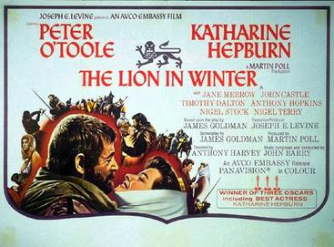

The Lion in Winter
41st Academy Awards
(Oscars 1969)
7 Nominations, 3 Awards
| Nominations | ||
|---|---|---|
| Category | Nominees | Result |
| Best Picture | Martin Poll | Nominated |
| Actor | Peter O'Toole | Nominated |
| Actress | Katharine Hepburn | Won |
| Directing | Anthony Harvey | Nominated |
| Writing (Screenplay--based on material from another medium) | James Goldman | Won |
| Costume Design | Margaret Furse | Nominated |
| Music (Original Score--for a motion picture [not a musical]) | John Barry | Won |